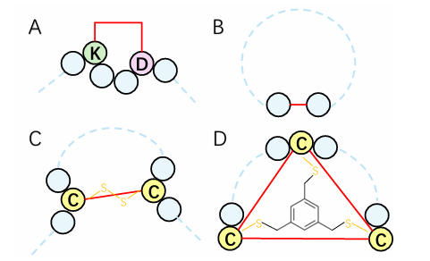
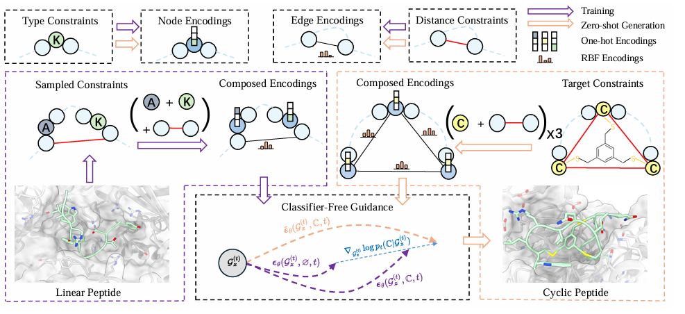
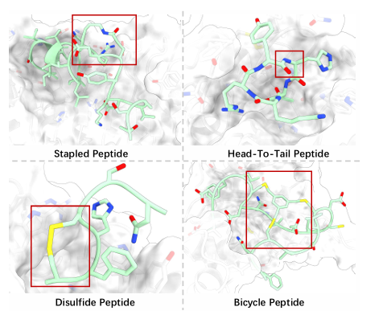
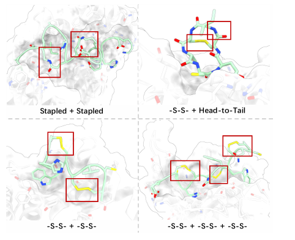
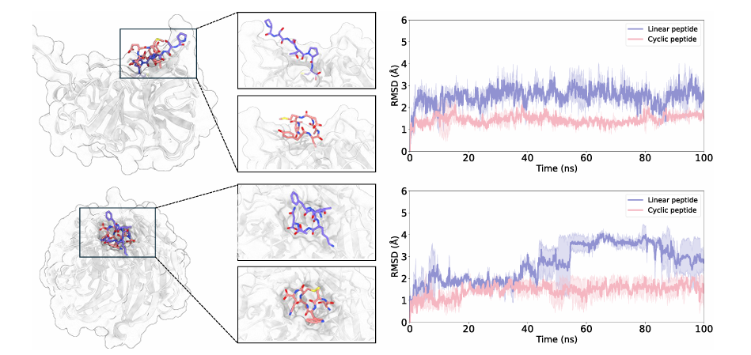
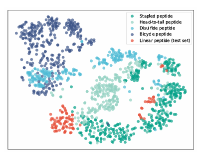
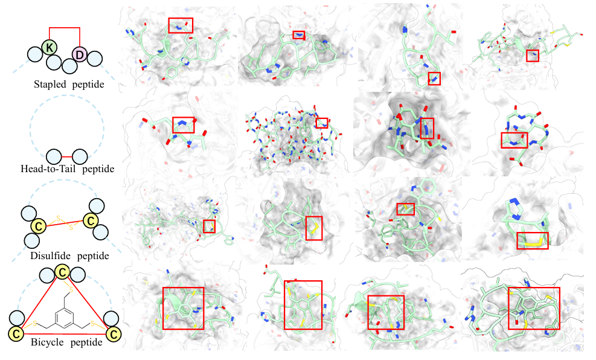

在药物研发领域，小分子和抗体之间一直存在一个“空白地带”——多肽药物。
多肽兼具两者的优点：比小分子靶向性更强、比抗体更容易穿透细胞膜。但线性肽有个致命弱点：在体内不够稳定，容易被蛋白酶降解，半衰期短，口服生物利用度差。
这时候，环肽（cyclic peptides）的优势就凸显出来了：
目前市场上已有多种环肽药物获批，例如免疫抑制剂环孢素 A、抗菌药万古霉素、抗肿瘤药曲贝替定等。但问题是：针对特定靶点的环肽设计非常困难，核心瓶颈就是——环肽训练数据太少。清华 AIR 团队提出 CP-Composer (Zero-Shot Cyclic Peptide Design via Composable Geometric Constraints)，用基本单元的约束组合解决了这个问题。
现有的靶点特异性肽设计方法，大多针对线性肽：
这些方法在环肽上直接失效，原因有两个：
传统解决方案不外乎两类：
先让模型随便生，生完了再挑满足环化条件的。问题是接受率极低，大量计算被浪费。
为某一种环化策略专门设计模型结构，比如专门做二硫键环肽。但换个环化类型就要重新设计模型，泛化性差。
清华 AIR 团队提出了 CP-Composer，核心思路非常巧妙：
复杂的环化模式 = 基本单元约束的组合
就像再复杂的数学公式，也无非是加减乘除的组合；再复杂的环肽，也可以拆成两类最基本的单元约束：
某个位置必须是某种氨基酸。
例如二硫键环肽需要两个 Cys；stapled 环肽需要 Lys 和 Asp/Glu。
某两个残基的 Cα 原子必须相距特定距离。
例如 head-to-tail 环肽要求首末端形成酰胺键；二硫键要求两个 Cys 的侧链硫原子距离约 2.0 Å。
论文证明，四种常见环化策略都可以被这两类约束完整表达：

这样一来，模型只需要学会两种单元约束，就能组合出任意复杂的环化模式。
CP-Composer 不是从零开始，而是基于 PepGLAD（Kong et al., 2024）这一几何潜空间扩散模型进行扩展。

把结合位点和肽表示为一个全连接几何图：
每个节点 代表一个残基，携带两类特征：
PepGLAD 先用一个 VAE 把全原子结构压缩到残基级潜变量：
其中：
潜空间相比全原子空间维度更低、扩散采样更高效。解码器 再把潜变量还原成全原子结构。
在潜空间中训练一个去噪扩散模型，去噪网络 是一个等变图神经网络（EGNN）。采样时从标准高斯先验出发，通过 DDPM 逐步去噪，最后解码得到肽结构。
这是 CP-Composer 最核心的创新。
对于类型约束 ，给每个节点增加一个控制信号：
直观理解：如果要求位置 5 必须是 Cys，就在位置 5 的节点特征上叠加一个 Cys 的 one-hot 向量；其他位置置零。
对于距离约束 ，对约束边使用 **RBF（径向基函数）**编码：
RBF 把单一距离值映射到 32 维向量，能更好地区分不同距离。非约束边不参与消息传递。
这些边特征通过额外的 dyMEAN 等变层注入网络。dyMEAN 是 Kong et al. (2023) 提出的一种自适应多通道等变消息传递层，能在保持 E(3) 等变性的同时处理边级别信息。
作者从理论上证明了两个关键性质：
定理 1（注入性）：类型编码函数 和距离编码函数 都是单射。
这意味着：不同的约束组合一定对应不同的控制信号，模型不会把两种不同的环化模式搞混。
定理 2（等变性保持）：条件分数 仍然是 E(3)-等变的。
因为类型约束和距离约束本身都是 E(3)-不变的（one-hot 与距离不随坐标系旋转/平移改变），所以注入后不会破坏模型对空间变换的对称性。
节点编码和边编码是“正交”的：
因此可以直接同时输入：
实现任意类型约束 + 距离约束的组合。这正是 CP-Composer 能处理高阶多环化的基础。
CP-Composer 最让人惊艳的是：训练数据全是线性肽，但推理时能直接生成环肽。
对于训练集中的一个线性肽 ：
置空约束后，模型就退化为无条件生成。通过这种方式，同一个网络同时学会了条件生成和无条件生成。
约束设计空间的具体选择：
这个设计非常讲究：它恰好覆盖了四种环化策略所需的约束空间，但又不会过于复杂导致训练困难。
传统 classifier-free guidance 多用于类别标签或目标值：
作者把它扩展到了几何约束上：
这里的 是 guidance weight，控制约束强度。
直观解释：
因此，CFG 相当于在每一步去噪时，都“推”结构一把，让它更满足目标环化约束。
这与能量引导（Energy Guidance）不同。能量引导需要额外定义能量函数并通过解码器反向传播梯度，容易产生对抗性伪影。而 CP-Composer 直接利用分数之差，无需额外能量函数，训练更稳定，生成质量更好。
每个测试靶点生成 5 条候选肽：
可以看到：


CP-Composer 还能生成更复杂的“多环肽”：
这说明模型确实学到了约束的组合泛化能力，而不是死记硬背训练见过的模式。

作者随机选了 2 个测试靶点（PDB 3RC4 和 4J86），用 Amber22 做了 100 ns 的分子动力学模拟，并计算 MM/PBSA 结合自由能：
环肽的 RMSD 显著更低（构象更稳定），结合自由能也更负（结合更强）。
在 bicycle 任务上对比不同 RBF 通道数：
说明 RBF 距离编码确实有助于距离约束控制，16 个通道已基本饱和。
单条肽生成时间：
CP-Composer 快了约 21 倍。
作者用 ESM2-650M 提取生成肽的序列嵌入，再做 t-SNE 可视化。结果发现：

这说明模型不是在“模仿”线性肽，而是真正探索了新的环肽结构空间。
CP-Composer 的优势在于：把约束满足问题转化为了条件/无条件分数的差值，避免了对能量函数的手工设计和梯度传播的数值问题。
尽管成果显著，论文也留有一些开放问题：

CP-Composer 为解决“数据稀缺但约束复杂”的生成问题提供了一个通用范式：
把复杂约束分解为可组合的单元约束，在训练时学习单元，在推理时组合单元。
这一思想不仅适用于环肽设计，也可以推广到：
如果你在做肽/蛋白质生成模型，或者对扩散模型如何施加结构化约束感兴趣，这篇论文非常值得细读。
代码链接：https://github.com/jdp22/CP-Composer_final